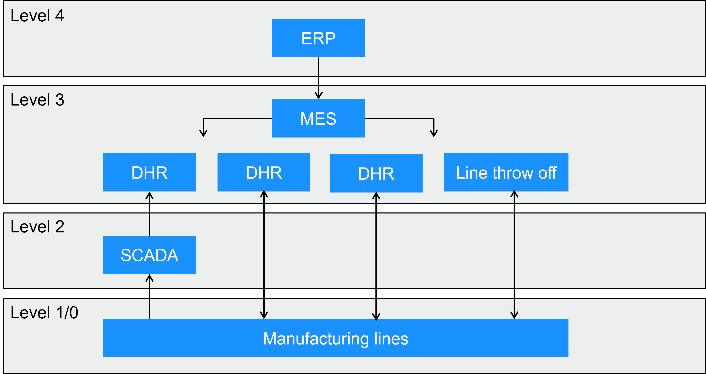
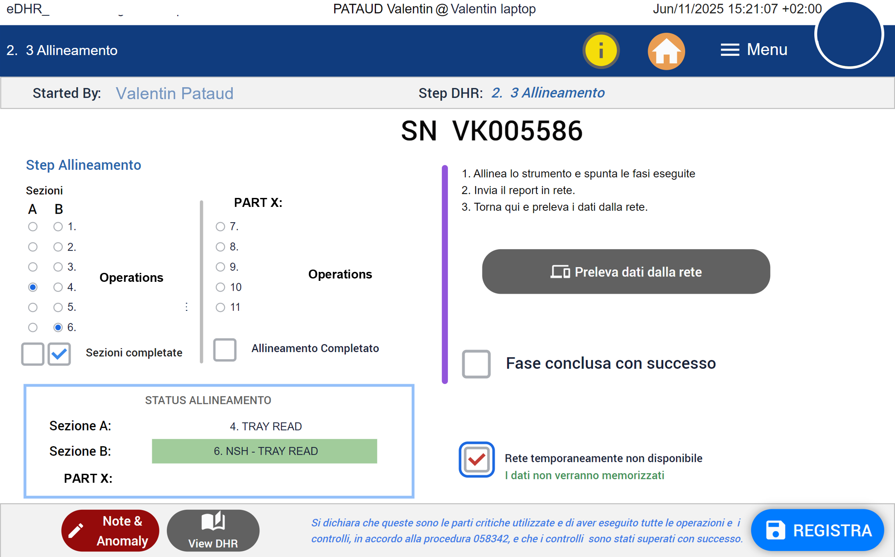
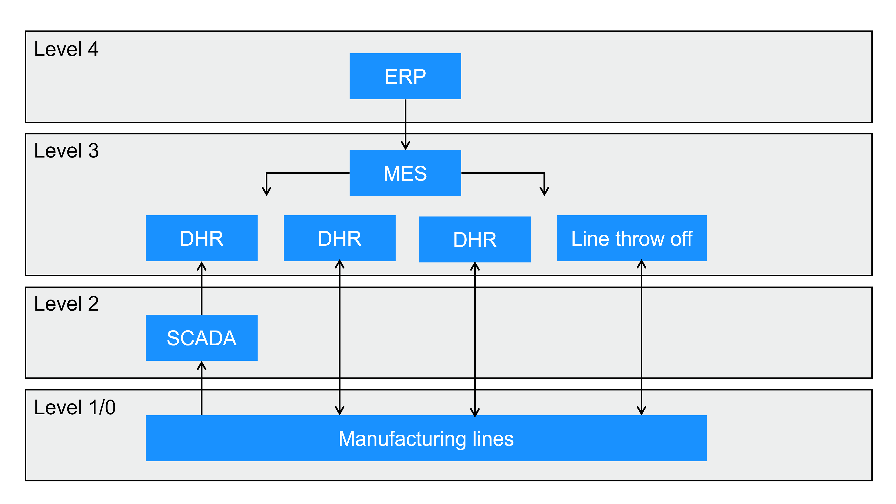

Digitaliser les dossiers de lot (DHR) en environnement dispositif médical
Retour d’expérience : du dossier papier à des DHR connectés, sur une plateforme low-code.
Le contexte
Chaque dispositif médical fabriqué s’accompagne d’un dossier de lot, le DHR (Device History Record), qui prouve que sa fabrication respecte les exigences. Pendant deux ans chez bioMérieux, à Florence, j’ai digitalisé ces dossiers sur la plateforme low-code Tulip. Au total, 14 applications ont été développées, validées et déployées, dont 11 DHR.

Pourquoi digitaliser un DHR
Le papier fait son travail, mais il isole l’information : elle reste dans le dossier tant qu’il n’est pas clos, saisie à la main, relue après coup. Digitaliser le DHR change la donne : l’information devient disponible en temps réel pour les autres services, les contrôles se font au fil de l’eau, et le dossier ne dépend plus d’un support physique.
De plus, le stockage permanent des dossiers de lot devient moins contraignant que l’archivage de montagnes de feuillets.
Ce que font les applications
- Recettes et opérations métier. Les dossiers de lot constituent la trace des opérations réalisées au cours de la production. Leur version numérique peut aller au-delà de la simple consignation des activités : elle peut guider les opérateurs à travers les instructions de fabrication, intégrer les recettes de production et exploiter automatiquement les résultats des opérations. Certaines vérifications peuvent ainsi être réalisées directement sur la ligne, au fil de la production. Le DHR numérique devient alors bien plus qu’un outil de traçabilité réglementaire : il contribue activement à l’exécution, au contrôle et à la fiabilisation des opérations.
- Accès contrôlé. L’accès aux DHR digitalisés (EBR, Electronic Batch Record) est contrôlé, ce qui répond à l’exigence de savoir qui a fait quoi. Les DHR implémentent alors un système dit « Role-Based Access Control ».
- Ordres de production. Le MES, interfacé avec SAP, distribue les ordres de production aux bancs d’assemblage selon un planning DDMRP (Demand Driven Material Requirements Planning). Ces ordres de production assurent le croisement des données entre les numéros de série qui sortent des lignes et la gestion administrative de l’usine.
- Numéros de série. Ils sont créés et suivis sur l’ensemble du procédé, y compris le rebut de ligne, avec une interface vers le système de gestion des anomalies.
- Intégration à l’usine. Ils remplacent le papier et donnent l’information en temps réel aux services concernés, dont le magasin (pièces détachées, supply chain).
- Contrôle qualité automatisé. Les vérifications se font en temps réel, avec une revue par exception à la fin du processus : l’attention se porte sur les écarts.
- Données instruments. Elles remontent directement dans le DHR, sans ressaisie, via un système de gestion des données en couche 2 du modèle ISA-95.

L’architecture
L’ensemble suit le modèle ISA-95. Au niveau 2, Node-RED assure une couche de type SCADA et IoT : elle collecte les données des instruments et les remonte vers le DHR. Au niveau 3, la plateforme Tulip fait office de MES. La conception répond aux principes d’intégrité des données ALCOA+, et l’ensemble a été validé et qualifié, suivant les normes 21 CFR Part 11 et ISO 13485.

Conformité et rôle
Mon rôle porte sur la conception, le développement et le déploiement. La responsabilité de la validation reste celle de l’entreprise : j’ai participé à des validations en tant que référent technique pour les études de risques et de compliance, et joué le rôle d’exécutant des tests sur certains autres systèmes. Les applications sont livrées conformes aux exigences réglementaires indiquées.
Résultats
- 14 applications déployées, dont 11 DHR, une application de gestion de la qualité et le MES.
- Environ 1 100 heures par an économisées (estimation) en production et en qualité, auxquelles s’ajoutent environ 116 heures par an de traçabilité papier supprimée grâce au MES.
- Un déploiement d’abord à Florence, puis une expertise appliquée sur d’autres sites en France.
- Grand Prix Talents V.I.E & ALUMNI 2026, catégorie innovation.
Ce que j’en retiens
Sur Tulip ou d’autres plateformes low-code, le code compte peu. L’essentiel se joue ailleurs : cartographier le procédé, le traduire en processus digitalisé, puis l’intégrer en environnement réglementé, avec la gouvernance, la traçabilité et le contrôle d’accès qui suivent. C’est ce travail qui permet de passer du papier à un système fiable, auditable.